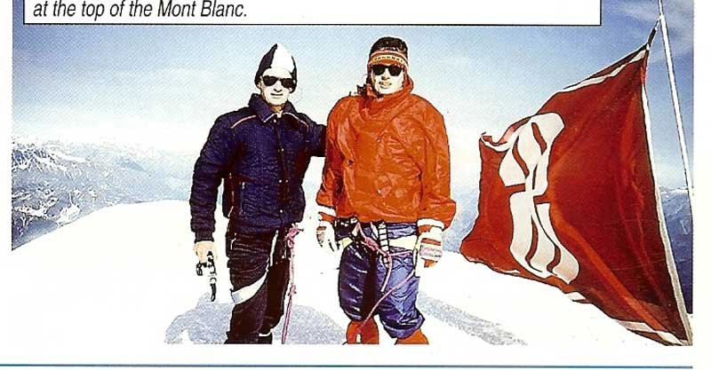
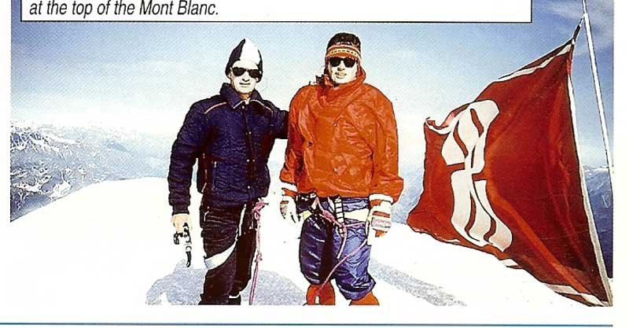
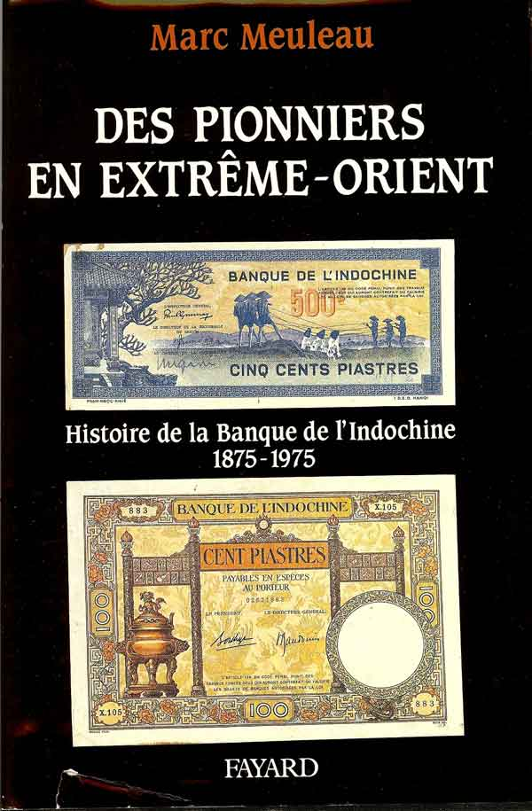
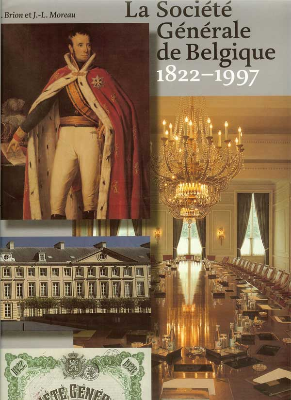
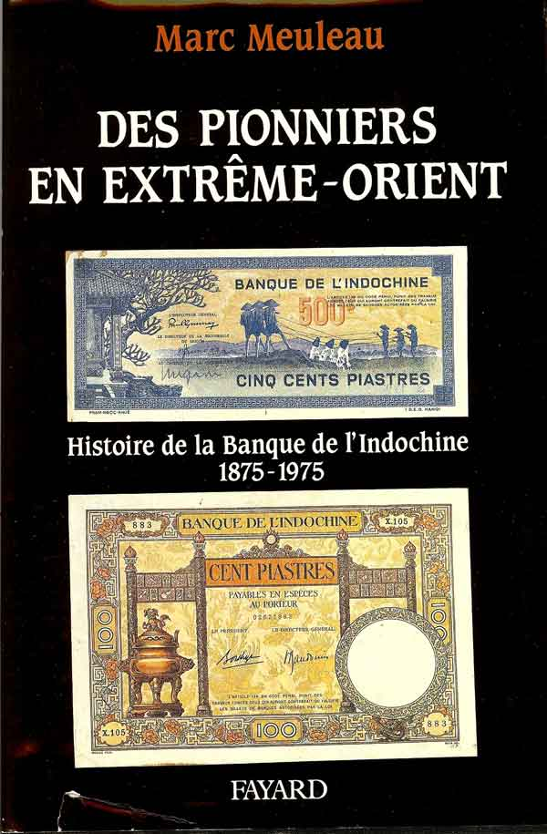
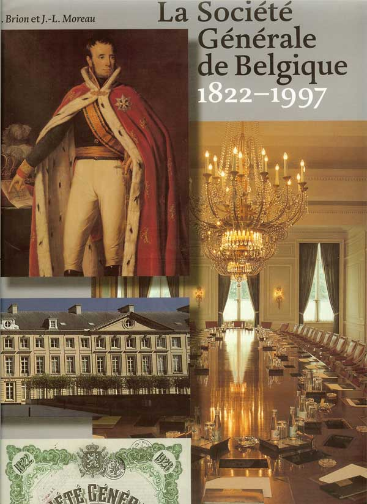

Les origines de la Banque Indosuez prennent leur source dans la création de la Compagnie Universelle du Canal Maritime de Suez en 1858 par Ferdinand de Lesseps. Celle-ci avait pour objet de construire et d’exploiter le Canal de Suez, inauguré en 1869 par l’Empereur Napoléon III en présence des souverains égyptien et européens. Le Canal est ensuite nationalisé en 1956 par le Colonel Nasser.
La Compagnie Universelle du Canal maritime se transforme et se reconvertit en Compagnie Financière de Suez en 1958. Celle-ci crée alors la Banque de Suez comme banque de financement et de trésorerie du nouveau groupe et la fusionne avec la Banque de L’Union des Mines-La Hénin pour former la Banque de Suez et de L’Union des Mines en 1959.
La Banque Indosuez, en tant que telle, résulte de la fusion en 1975 de la précédente avec la Banque de l’Indochine, fondée en 1875 pour servir d’institut d’émission à la Cochinchine récemment conquise. Cette banque se développe en même temps que la colonisation française en Asie jusqu’à la fin du 19ème siècle. C’est la première banque française implanté en Asie du Sud Est (colonie française).
Afin d'affirmer l'image identitaire d'Indosuez, la Banque se dote très vite d'un drapeau à ses couleurs. Celui-ci flottera sur tous les bâtiments officiels de la Banque répartis dans plus de 65 pays à travers le monde.
La Compagnie Universelle du Canal maritime se transforme et se reconvertit en Compagnie Financière de Suez en 1958. Celle-ci crée alors la Banque de Suez comme banque de financement et de trésorerie du nouveau groupe et la fusionne avec la Banque de L’Union des Mines-La Hénin pour former la Banque de Suez et de L’Union des Mines en 1959.
La Banque Indosuez, en tant que telle, résulte de la fusion en 1975 de la précédente avec la Banque de l’Indochine, fondée en 1875 pour servir d’institut d’émission à la Cochinchine récemment conquise. Cette banque se développe en même temps que la colonisation française en Asie jusqu’à la fin du 19ème siècle. C’est la première banque française implanté en Asie du Sud Est (colonie française).
Afin d'affirmer l'image identitaire d'Indosuez, la Banque se dote très vite d'un drapeau à ses couleurs. Celui-ci flottera sur tous les bâtiments officiels de la Banque répartis dans plus de 65 pays à travers le monde.
{% for img in imgEmblemes %}
 {% endfor %}
{% endfor %}
{% endfor %}
le 24 juillet 1993, une cordée composée du guide Richard Mailhos, de Thomas Chevrie et d'Eymeric de Kerhor (de la succursale de Lille) a réussi l'ascension du Mont Blanc. Il aura fallu environ 8h30 de marche aux courageux amateurs de montagne lillois pour déployer les couleurs de la Banque sur le toit de l'Europe.

En 1997, un an après le rapprochement avec le Crédit Agricole qui lui apporte ses activités marchés, internationales et grandes clientèles, le nouvel ensemble devient Crédit Agricole Indosuez.
En 2003, le Crédit Agricole réussit son Offre Publique Amicale Mixte sur le Crédit Lyonnais qui lui apporte sa banque de financement et d’investissement .
En 2004 le pôle banque de Financement et d’Investissement du groupe Crédit Agricole devient CALYON, renommé CA-CIB en Février 2010.

En 1997, un an après le rapprochement avec le Crédit Agricole qui lui apporte ses activités marchés, internationales et grandes clientèles, le nouvel ensemble devient Crédit Agricole Indosuez.
En 2003, le Crédit Agricole réussit son Offre Publique Amicale Mixte sur le Crédit Lyonnais qui lui apporte sa banque de financement et d’investissement .
En 2004 le pôle banque de Financement et d’Investissement du groupe Crédit Agricole devient CALYON, renommé CA-CIB en Février 2010.
La Banque de l'Indochine - Phnom Penh
{% for img in imgPnomPhen %}
 {% endfor %}
{% endfor %}
{% endfor %}

- « Des pionniers en Extrême-Orient » de Marc Meuleau (Fayard 1990). C’est une histoire de la Banque de l’Indochine (1875-1975), préfacée par Maurice Lévy-Leboyer, professeur émérite à l’Université de Paris X et par Antoine Jeancourt-Galignani, président de la Banque Indosuez.

- « Journal de voyage en Egypte – Inauguration du Canal de Suez » de Roberto Morra di Lavriano (Gründ 1997). C’est une transcription du manuscrit original et des notes de Roberto Morra di Lavriano par Alberto Siliotti et Alain Vidal-Naquet, dans un superbe album de grande taille comportant reproductions de tableaux et photos de grande qualité.
- « La Société Générale de Belgique 1822-1997 » de René Brion et Jean-Louis Moreau (Fonds Mercator à Anvers 1998). Fondée par le Roi Guillaume 1er des Pays-Bas, la Société Générale est plus ancienne que la Belgique elle-même. L’ouvrage dresse un parallèle constant entre l’histoire de l’entreprise et celle de l’espace économique, social et politique belge pendant 175 ans jusqu’à son rapprochement avec la Compagnie de Suez. En filigrane se dessinent des débats de société toujours actuels.


- « Journal de voyage en Egypte – Inauguration du Canal de Suez » de Roberto Morra di Lavriano (Gründ 1997). C’est une transcription du manuscrit original et des notes de Roberto Morra di Lavriano par Alberto Siliotti et Alain Vidal-Naquet, dans un superbe album de grande taille comportant reproductions de tableaux et photos de grande qualité.
- « La Société Générale de Belgique 1822-1997 » de René Brion et Jean-Louis Moreau (Fonds Mercator à Anvers 1998). Fondée par le Roi Guillaume 1er des Pays-Bas, la Société Générale est plus ancienne que la Belgique elle-même. L’ouvrage dresse un parallèle constant entre l’histoire de l’entreprise et celle de l’espace économique, social et politique belge pendant 175 ans jusqu’à son rapprochement avec la Compagnie de Suez. En filigrane se dessinent des débats de société toujours actuels.

La stratégie mondiale développée par la Banque Indosuez, sous l’impulsion de son président Antoine Jeancourt-Galignani, la conduit à envisager l’acquisition de son propre centre de formation afin d’accueillir stages de formation, séminaires de management, rencontres de dirigeants et de favoriser une meilleure connaissance mutuelle ainsi qu’une fertilisation croisée des expertises et des expériences à travers le monde. Ce sera un véritable investissement au service des hommes, des projets et des entités du groupe Indosuez.
- Le Manoir de Gorse Hill, demeure édouardienne de 1910 est situé en Angleterre aux environs de Woking dans le Surrey, à 1/2h au sud de Londres. Il a été acquis en 1985 et revendu en 1996 à la veille du rapprochement avec le Crédit Agricole. Il laisse un souvenir mémorable chez tous les anciens d'Indosuez pour son charme, son ambiance extraordinaire et la qualité des intervenants ou formateurs. Son rayonnement international était indéniable.
{% for img in imgGorseHill %}{% endfor %}
- Le Château de Fillerval, situé au sud de Beauvais dans l’Oise, était l’ancienne demeure de la famille Cassini, célèbres astronomes qui dirigèrent l’Observatoire de Paris aux 17ème et 18ème siècles. Dès 1996, Crédit Agricole Indosuez a partagé ce centre avec la Compagnie de Suez et la Société Générale de Belgique. C'est actuellement l'université d'entreprise de GDF Suez.
{% for img in imgFillerval %}{% endfor %}
- La Banque quittera ce centre à la fin de l’année 2000 pour bénéficier dès 2001 d’un nouveau centre de formation, le Domaine du Tremblay, acquis en 2000 par Crédit Agricole SA.
{% for img in imgTremblay %}{% endfor %}
{% for img in imgCommunication %}
 {% endfor %}
{% endfor %}
{% endfor %}